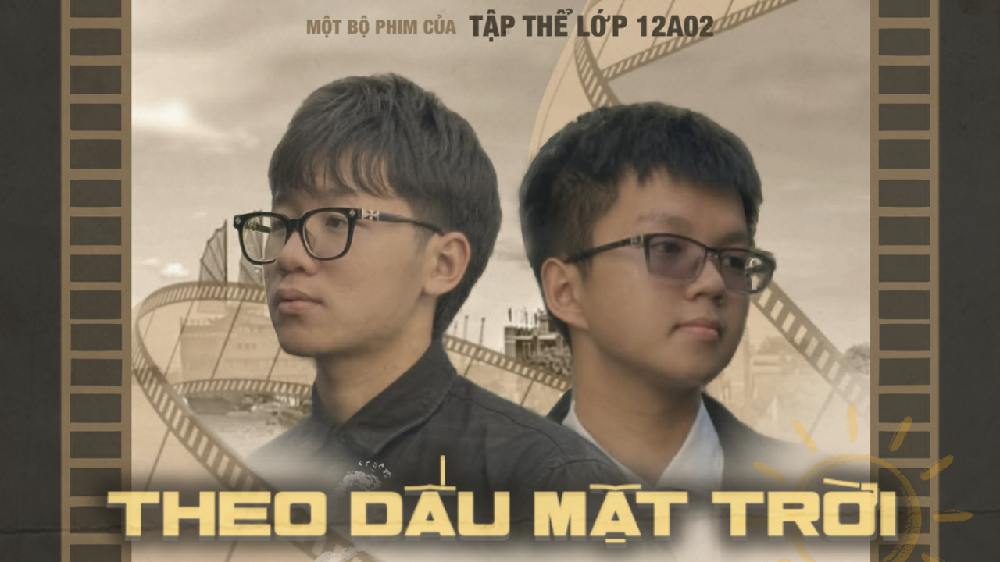
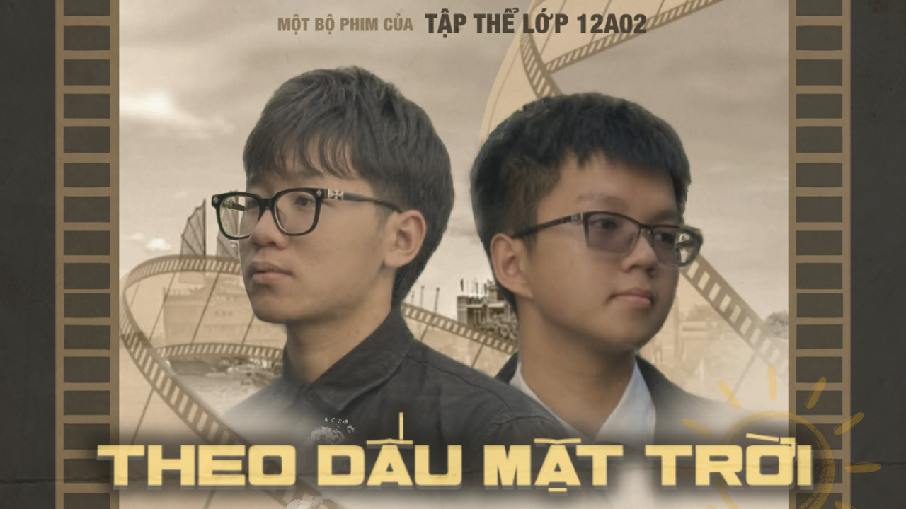

PHIM CỦA TẬP THỂ 12A02
 

Nhấn vào thumbnail để xem bộ phim!
Tóm tắt phim:
Phim kể về Quang Huy - một cậu học sinh chán ghét môn Lịch sử. Khi đang chơi game trong một quán
net, cậu vô tình bị kéo vào một trò chơi lịch sử và xuyên không về quá khứ. Tại đây, cậu buộc phải hoàn thành
nhiệm vụ của hệ thống khi có mặt và chứng kiến những mốc thời gian quan trọng trong công cuộc ra đi tìm đường
cứu nước của Chủ tịch Hồ Chí Minh. Sau khi trực tiếp chứng kiến những hi sinh, cống hiến vĩ đại của Bác, Quang
Huy đã thay đổi nhận thức. Khi trở về hiện tại, cậu trở nên yêu thích và hiểu được tầm quan trọng của môn Lịch
sử, bắt đầu hành động, học tập và làm theo tư tưởng Hồ Chí Minh.